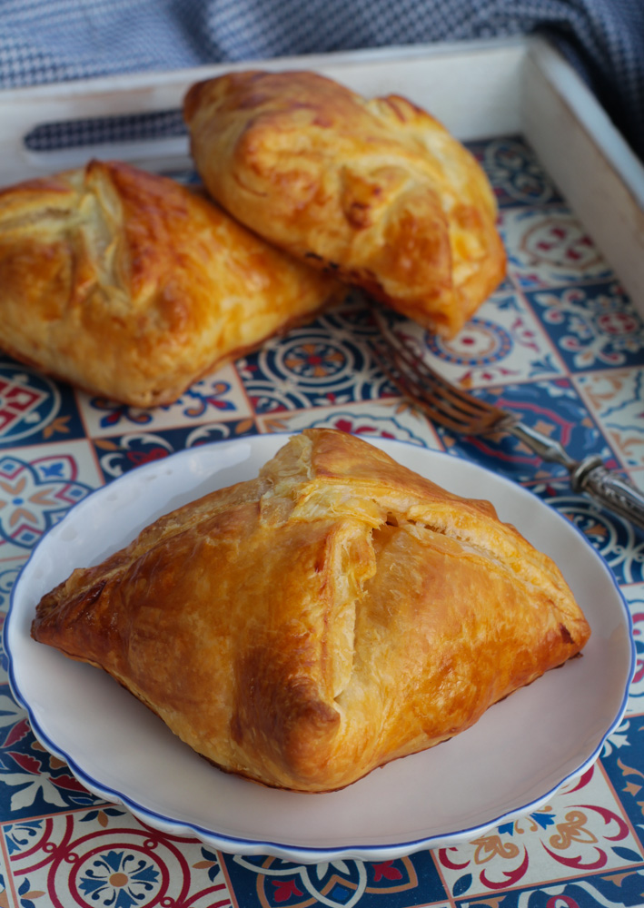
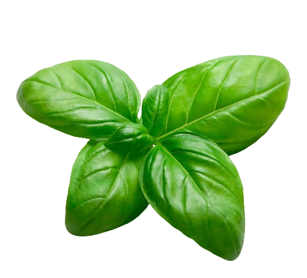
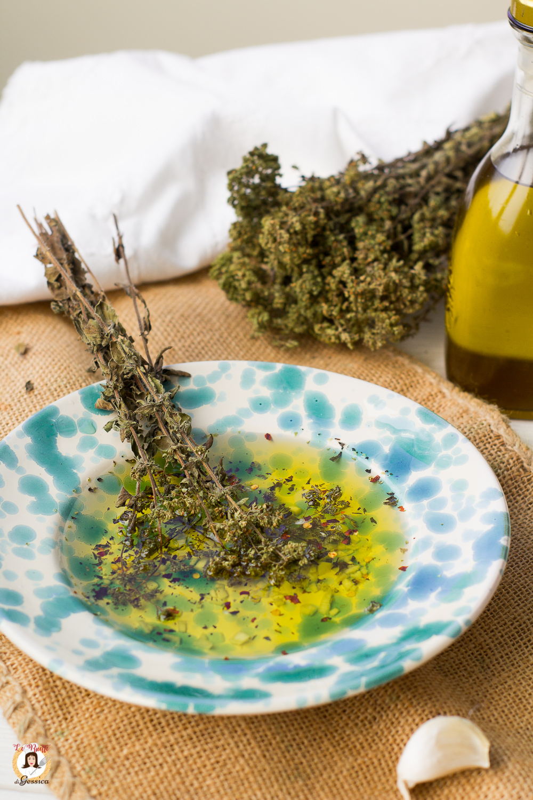

Verde Basilico
Non siamo Giallo Zafferano
Lo dimostra il colore...
Lo dimostra il colore...
LE RICETTE DELLA SETTIMANA!!!

Cipollina catanese al forno
Le CIPOLLINE CATANESI sono dei rustici Siciliani a base di pasta sfoglia, ripieni di cipolle fritte, prosciutto cotto e formaggio filante.
 Spaghetti alla norma
Spaghetti alla norma
La pasta alla Norma è uno dei simboli della cucina isolana. Questa specialità catanese venne realizzata come omaggio culinario alla più bella opera del celebre compositore Vincenzo Bellini: la Norma.


"U Sammurigghiu"
Il SALMORIGLIO, in Siciliano e in Calabrese "SAMMURIGGHIU" o "SALAMARIGGHIU", è una salsa tipica della cucina Siciliana, ma utilizzata anche nella vicina Calabria. Un’emulsione a base di olio di oliva e aromi, che si utilizza per insaporire carne, pesce o verdure alla griglia.